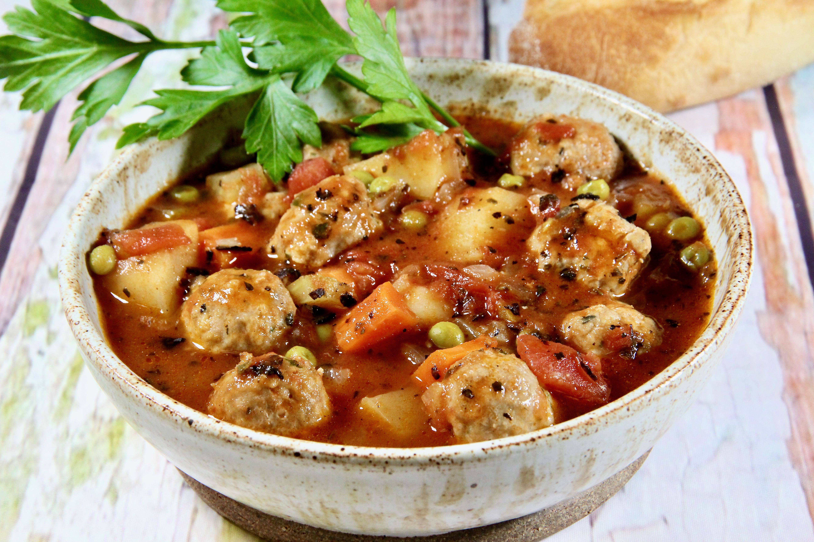

Turkey Meatball Stew!

Lean ground turkey, potatoes, bread crumbs, fire roasted. Delicious!
Ingredients
- 1 tbsp rapeseed oil
- 1 onion, finely chopped
- 2 carrots, finely diced
- 2 celery sticks, finely diced
- 1 fennel bulb
Step 1
Heat the oil in a large non-stick frying pan with a lid, then tip in the onion, carrots, celery, garlic and fennel, and stir well. Cover the pan and cook over a medium heat for 8 mins, stirring every now and then. Pour in the passata and stock, cover and leave to simmer for 20 mins.
Step 2
Meanwhile, tip the mince into a large bowl. Add the oats,
fennel seeds and leaves, the garlic and plenty of black pepper,
and mix in with your hands. Lightly shape into 25 meatballs about the size of a walnut.
Spray or rub a non-stick pan with a little oil and gently cook the meatballs until they
take on a little colour. Give the sauce a stir, then add the meatballs and parsley.
Cover and cook for 10 mins until they are cooked through and the veg in the sauce is
tender. Serve with broccoli and baby
potatoes in their skins, or pasta and salad.Step 3
Eat